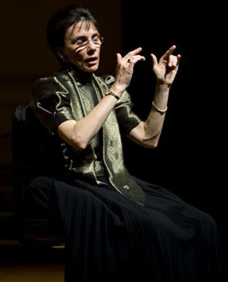

The original director of the Yellow Door Choir, singer-songwriter Linda Morrison was there at the genesis of a Montreal institution that under her twelve years of direction became one of the city's most respected, innovative and community-oriented choirs. Linda's original arrangements, global musical tastes, vast performing experience, and flair for fun laid the foundation for an ensemble known for its originality, freshness and diversity.
 Eleanor Stubley is the Associate Dean, Director of Graduate Studies at the Schulich School of Music, McGill University, where she has taught courses in aesthetics, conducting, and Canadian music since 1989. Under Eleanor's direction, the choir explored a rich variety of choral music from classic to contemporary while building community with over 30 Montreal charities. This achievement was recognized in 2012 when Eleanor received the Queen Elizabeth II Diamond Jubilee Medal.